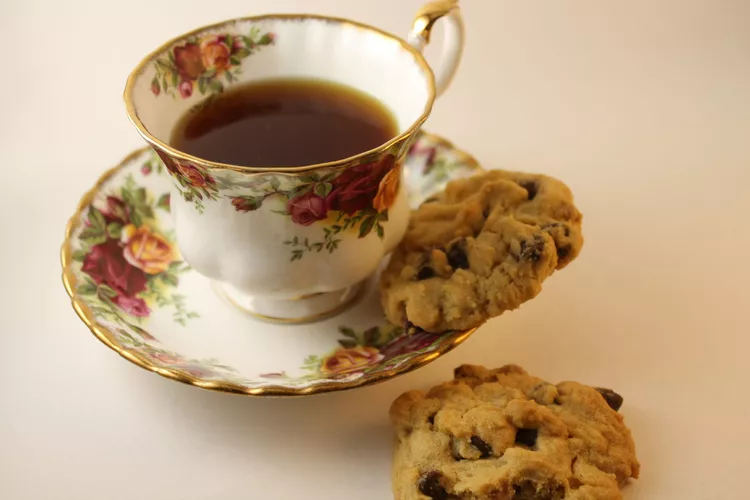

Kitchen Tips> HOW TO
How to Make Tea 5 Ways
Learn how to make a cup fit for a queen.
By Karla Walsh Published on August 12, 2020

Sure, it seems simple: Add water. Steep. Sip. But the little details can make a big difference as you master how to make tea. That's because with such few ingredients, how you select them and treat them can determine whether your cup is fit for a queen — or something that you'll struggle to finish.First, we'll cover the basics of tea, then we'll explain how to make tea every which way. Your tea parties are just a few tips away from a big level-up.
What is tea?
Tea leaves come in five styles, which are broken down by how the leaves are dried, rolled, and made ready to drink:
- Black Tea
- Green tea (including matcha)
- White tea
- Herbal tea
- Oolong tea
Nearly all (90 percent) of the tea we drink is a blend, many of which include flowers, berries, spices, or other flavors to achieve their final taste. All of the above tea varieties can be made via the methods explained below, just using different brew times. Unless specified otherwise on your tea package, here's how to long to brew tea:
- Green tea: Brew for one to two minutes
- Black tea: Brew for two to three minutes
- Herbal, oolong, and white tea: Brew for three to five minutes
As you study up on all of the options for how to make tea, keep in mind that fresh, clean water will yield the tastiest mug (spring or filtered works great), and the temperature and steep time are important to ensure your tea isn't too bitter, too weak, too strong, or too sweet.
How to Make Hot Tea 2 Ways
How to Make Tea Using a Tea Bag
We'll start with the easiest option for how to make tea: Using a tea bag.
- Place a tea bag in your cup or mug.
- Bring fresh, cold water to a rolling boil.
- Once boiling, pour over the tea bag and steep according to the timing above based on your tea variety.
- Remove the tea bag from the cup.
- If desired, finish with milk, your preferred sweetener (such as sugar, honey, agave, or stevia) or a slice of citrus.
How to Make Loose-Leaf Tea
If you choose to steep loose-leaf tea, you'll need a tea infuser. These may come inside your teapot (like with this AUBCC 32-Ounce Glass Teapot with Stainless Steel Infuser; $16, amazon.com), or you can buy a single-serving tea infuser (such as these Stainless Steel Tea Infusers; $14 for two, amazon.com) to pop inside a single cup.
- Fill the infuser with the amount of tea specified on the package for how many servings you need.
- Bring fresh, cold water to a rolling boil.
- Once boiling, pour over the tea infuser (or lower the infuser into the pot) and steep according to the timing above based on your tea variety.
- Remove the tea infuser from the cup or pot.
- If desired, finish with milk, your preferred sweetener, or a slice of citrus.
RELATED: Our Best Hot Tea Recipes (Including Chai!)
How to Make Iced Tea 2 Ways

Most often made with black tea, iced tea also tastes great with green tea, white tea, or herbal tea as the base. Here's how to make iced tea in a big batch and a single serving.
Iced Tea for a Crowd
- Bring 4 cups of fresh, clean water to a rolling boil, then pour over 2 tea bags or a tea infuser filled with two loose-leaf servings.
- Steep according to the timing above based on your tea variety.
- If you prefer a stronger flavor, allow the tea to steep 30 to 60 seconds extra.
- Stir, then remove the tea bags or infuser.
- If desired, stir in your preferred sweetener.
- Fill a large pitcher with 2 cups of cold water and 2 cups of ice.
- Store in the refrigerator.
Iced Tea for One
- Bring 1 cup of fresh, clean water to a rolling boil, then pour over 1 tea bag or a tea infuser filled with 1 loose-leaf serving.
- Steep according to the timing above based on your tea variety.
- If you prefer a stronger flavor, allow the tea to steep 30 to 60 seconds extra.
- Stir, then remove the tea bags or infuser.
- If desired, stir in your preferred sweetener.
- Allow to cool, then pour over ice.
To make iced sweet tea, add 2 tablespoons of sugar per cup. For a big-batch option, try this fan-favorite Smooth Sweet Tea recipe.
How to Make Cold Brew Tea
If you want an even smoother-tasting cup of tea or aren't near a stove or microwave to boil water, consider cold brew tea. Here's how to make tea cold brew-style:
- For 4 cups of cold brew tea, pour 5 servings of loose leaf tea into a French press (like this Bodum Chambord 1-Liter French Press; $39, amazon.com) with the plunger up.
- Pour 4 cups of water over the tea leaves, then cover and refrigerate for at least 4 hours. (The longer you steep the tea, the stronger the flavor will be — you can absolutely do so for eight to 12 hours to make cold brew tea overnight.)
- Remove the press from the refrigerator, press down the plunger, then pour over ice.
- If desired, stir in your preferred sweetener.
RELATED:coffee drink recipe ideas